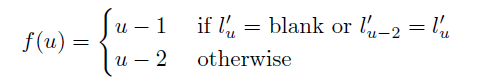
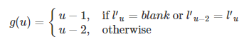

第 3 章 前向传播与反向传播
我们来看一下CTC是怎样训练的……
在对符号做了一些定义之后，我们接下来看看CTC的前向传播的过程。我们前向传播就是要去计算 \(p(l|x)\) 由于一个序列 \(l\) 通常可以有多条路径经过映射后得到，而随着序列 \(l\) 长度的增加，相对应的路径的数目是成指数增加的，因此我们需要一种高效的算法来计算它。
有一种类似于HMM的前向传播的算法可以帮助我们来解决这个问题。它的关键点就是那些与序列 \(l\) 对应的路径概率都可以通过迭代来计算得出。
3.1 前向传播
对于一个特定的序列\(l\) ，我们定义前向变量\(\alpha(t,u)\)为输出所有长度为\(t\)，且经过\(F\) 映射之后为序列\(l\) 的路径的概率之和，用公式表达如下所示： \[\alpha(t,u)=\sum_{\pi \in V(t,u)}\prod_{i=1}^{t}y_{\pi_i}^{i}\] 其中\(V(t,u)=\{\pi \in A^{'T}:F(\pi)=l_{1:u/2},\pi_t=l_u^{'}\}\) 代表了所有满足经过 \(F\) 映射之后为序列\(l\) ，长度为t的路径集合，且在第t时间步的输出为label: \(l_u^{'}\).注意这里的\(l^{'}\)是对\(l\)进行空白插入得到的，且插入后的维度定义为\(U^{'}=2U+1\),其中\(U\)表示\(l\)的长度。
正如我们将看到的，在时间t的前向变量可以从时间t-1的递归计算。
所有正确路径的开头必须是空格或者label：\(l_1\)，因此存在着初始化的约束条件：
\[\alpha(1,1) = y_b^1\]
\[\alpha(1,2) = y_{l_1}^1\]
\[\alpha(1,u) = 0 \quad \forall u>2\]
我们通过下图去理解这个过程：
图 3.1: CTC forward-backward algorithm
上图中，白色的点表示一个label，黑色的点表示空格，纵向每一列表示的是路径的长度T（或者时刻T），箭头代表了路径下一个时刻可以输出到哪个label去。如果在时刻 1 的 label 为空格，那么路径在下一时刻只有两个选择，第一个还是输出空格，第二个就是输出序列 \(l_1\) 中对应的空格的下一个label：C；如果在时刻2的 label 为 C，那么在时刻3，它可以有三种选择：第一种就是输出还是 C，第二种是输出为空格，第三种是直接输出A。
从上图可以看出长度为T的输出路径映射到序列 \(l\)：cat， 可以由第T步为label：t(cat中的字母t)的所有路径和第T步为空格的所有路径的概率之和来表示。
因此,\(p(l|x)\)可以由前向变量来表示，即为
\[p(l|x)=\alpha(T,U^{'})+\alpha(T,U^{'}-1)\]
其中\(\alpha(T,U^{'})\)可以理解为所有路径长度为\(T\)，经过\(F\)映射之后为序列\(l\),并且第\(T\)时刻的输出的label为\(l^{'}_U\)或者\(l^{'}_{U-1}\)。也就是路径的最后一个是否包含了空格。
现在我们来引出其推导公式：
\[\alpha(t,u)=y_{l^{'}_u}^t\sum_{i=f(u)}^u\alpha(t-1,i)\]
其中

$$
\begin{equation}
f(u)=\left\{
\begin{aligned}
& u-1 & if \quad l_u^{'}=blank \quad or \quad l_{u-2}^{'}=l_u^{'}\\
& u-2 & otherwise \\
\end{aligned}
\right.
\end{equation}
$$如何理解这个递推公式呢，很简单，我们可以看下面递推图，就以时刻T为空格的前向变量为例，由于我们之前讲过了如果当前时刻的输出为空格，下一时刻路径输出只有两种可能性，而如果我们当前时刻是空格，上一时刻的输出从图中可以看出也是由两种可能性，一种是在T-1时刻输出为空格，另外一种是在T-1时刻输出为T。因此我们只要计算出T-1时刻输出为空格的所有正确路径的概率之和以及在T-1时刻输出为T的所有路径的概率之和，再乘上T时刻输出为空格的概率 \(y_{l_u^{'}}^t\)，就可以得到前向变量\(\alpha(t,u)\)。时刻T为label：T的前向变量的求法和空格的类似，只是它由三种可能情况求和再乘上 \(y_{l_u^{'}}^t\) 得到的。
详看下面的示意图：
图 3.2: CTC 递推关系示意图
3.2 反向传播
与前向传播类似，首先定义一个反向变量\(\beta(t,u)\)，他的含义是从\(t+1\)时刻开始，在前向变量\(\alpha(t,u)\)上添加路径\(\pi^{'}\),使得最后通过\(F\)映射之后为序列\(l\)的概率之和，用公式表示为：
\[\beta(t,u) = \sum_{\pi \in W(t,u)} \prod_{i=1}^{T-t}y_{\pi_i}^{t+i}\]
其中\(W(t,u) = \{\pi \in A^{'T-t}: F(\pi^{'}+\pi)=l, \forall \pi^{'} \in V(t,u) \}\)
按照前向传播的图的举例说明：假设我们在T-2时刻路径输出为label:A,那么此时的反向变量的求法是在T-2时刻开始，所有能到达T时刻输出为空格或者label：T的“剩余”路径\(\pi^{'}\)的概率之和。
反向传播也有相对应的初始化有条件：
\[\beta(T,U^{'})=\beta(T,U^{'}-1)=1\] \[\beta(T,u^{'}) = 0, \quad \forall u^{'} < U^{'}-1\]
他的递推公式如下所示:
\[\beta(t,u) = \sum_{i=u}^{g(u)}\beta(t+1,i)y_{l_{i}^{'}}^{t+1}\]
其中

3.3 log尺度变换
在现实中，不论是计算前向变量还是计算反向变量，都会涉及到大量的概率乘积的运算，概率都是小于1的数进行乘积运算时计算机在处理时会使得趋于0的数近似于0(underflows:你可以在R中输入(sqrt(2))^2==2就可以看到这种现象),因此做对数变换，变换完之后，变量中的加法运算就不方便了，然后就又用了一个trick:
\[\ln(a+b)=\ln a+ \ln (1+e^{\ln b - \ln a})\]